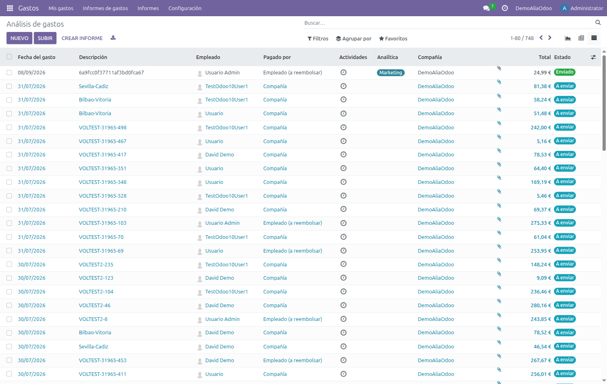
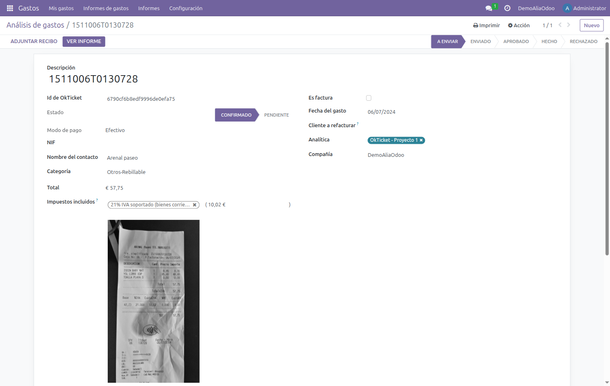
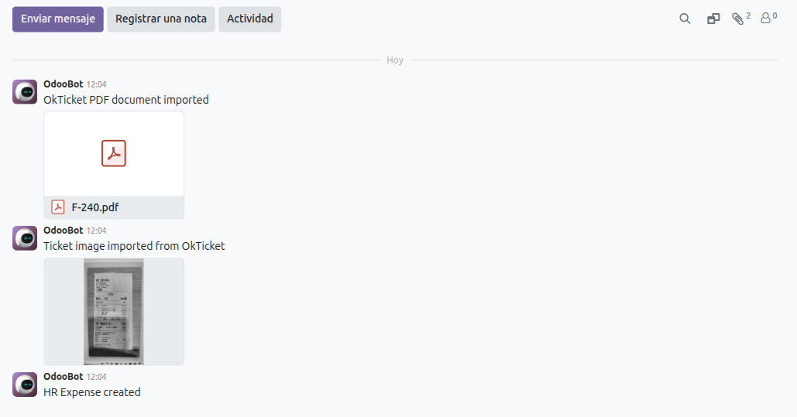
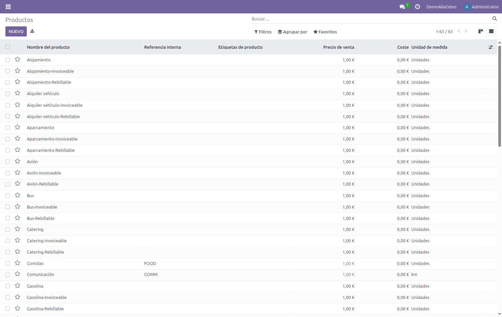
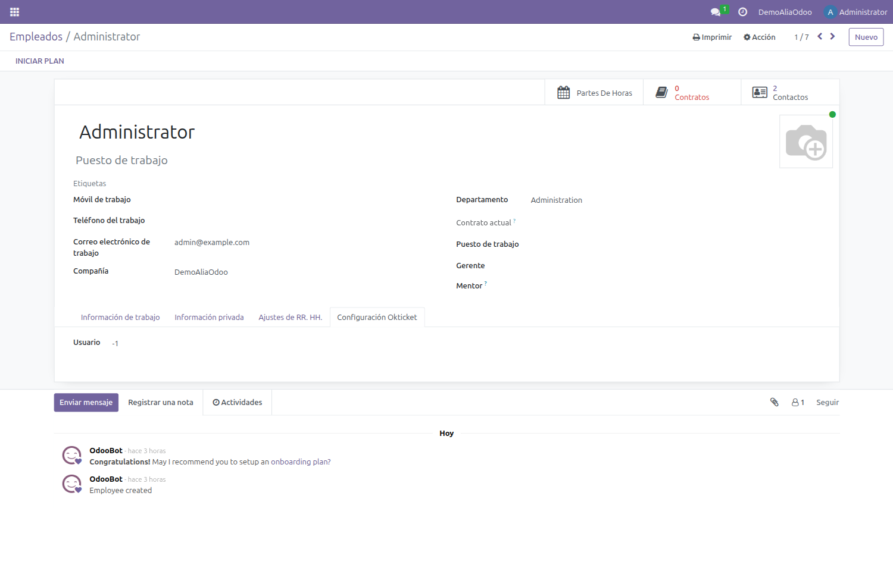
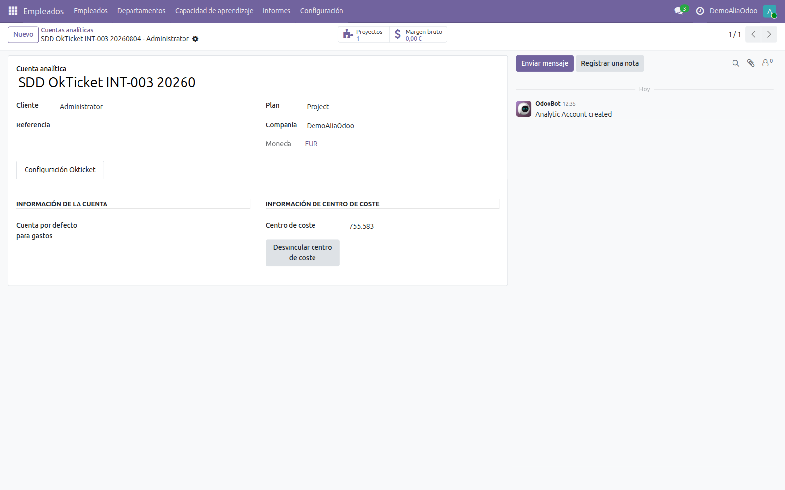

Manual de usuario
Conector OkTicket para Odoo 19
Qué hace el conector en tu día a día y dónde encontrar cada cosa en Odoo.
Manual de usuario
Qué hace el conector en tu día a día y dónde encontrar cada cosa en Odoo.
El conector trae a Odoo, de forma automática, los gastos que registras con la aplicación de OkTicket. No tienes que introducir nada a mano: fotografías el ticket con el móvil y, en la siguiente sincronización, el gasto aparece en Odoo con su importe, su fecha, su categoría, tu nombre como empleado y la imagen del recibo adjunta.
Además mantiene alineados los catálogos entre ambos sistemas:
Los gastos viven en la aplicación Gastos de Odoo. Cada empleado ve los suyos en Mis gastos; quien tenga permisos de responsable o de contabilidad puede ver los de toda la compañía.

La columna Descripción muestra la referencia del ticket en OkTicket, lo que facilita localizar un gasto concreto si te lo reclaman por su número.
Al abrir un gasto verás los campos habituales de Odoo —categoría, importe, impuestos, empleado, quién lo paga— y, además, una pestaña Servidor Okticket que añade el conector.

| Campo | Qué significa |
|---|---|
| Id de Okticket | Identificador del gasto en OkTicket. Es la referencia que hay que dar al soporte si algo no cuadra. |
| Estado | Estado del gasto en OkTicket (por ejemplo Confirmado). Es informativo: no cambia el estado del gasto en Odoo. |
| Es factura | Marcado cuando el documento es una factura y no un simple ticket. |
| Modo de pago | Cómo se pagó según la app: tarjeta, efectivo, etc. |
| NIF y Nombre del contacto | Datos del establecimiento leídos del recibo, cuando la app ha podido extraerlos. |
| Hoja de Gastos | Texto descriptivo del informe al que pertenece el gasto en OkTicket. Es solo información. |
El conector adjunta al gasto la fotografía del recibo, que puedes ver directamente en el panel derecho de la ficha. Cuando el documento es una factura enviada al robot de OkTicket, adjunta también el PDF original.

Ambos quedan registrados en el historial con un mensaje del sistema, de modo que siempre se sabe qué llegó y cuándo. Los documentos no se duplican: si la sincronización vuelve a pasar sobre el mismo gasto, no se adjuntan de nuevo.
Cada categoría de OkTicket —Restauración, Peaje, Aparcamiento, Kilómetros…— tiene su equivalente en Odoo como producto de gasto. Es lo que hace que, al importar, el gasto quede clasificado automáticamente.

Verás que algunas categorías aparecen duplicadas con el sufijo -Invoiceable. Son la variante que se usa cuando el documento es una factura, y permiten distinguir contablemente un ticket de una factura del mismo concepto.
El emparejamiento entre un usuario de OkTicket y un empleado de Odoo se hace por correo electrónico. En la ficha del empleado, la pestaña Configuración Okticket muestra el identificador con el que quedó vinculado.

Lo que se publica en OkTicket como centro de coste es una cuenta analítica de Odoo. Una vez publicada, al registrar un ticket desde el móvil puedes imputarlo a ese centro de coste.
Es la forma habitual y funciona con cualquier cuenta analítica, tenga o no un proyecto detrás. Ve a la lista de cuentas analíticas, marca las que quieras publicar y despliega el menú Acciones: encontrarás Creación de centro de coste desde cuenta analítica.

Odoo pide confirmación antes de crear nada:

Además, si tu compañía tiene activada la opción Autocrear centro de coste del proyecto, al dar de alta un proyecto en Odoo su cuenta analítica se publica sola, sin pasar por la acción anterior.

La pestaña Configuración Okticket de la cuenta analítica indica el identificador del centro de coste y ofrece la opción de desvincularlo si se quiere dejar de sincronizar.
El conector solo trae el gasto: no lo aprueba ni lo contabiliza. A partir de ahí sigue el circuito normal de gastos de Odoo.
El estado avanza por Borrador → Aprobado → Registrado → Pagado, igual que cualquier otro gasto de Odoo.
| Situación | Qué ocurre y qué hacer |
|---|---|
| He subido un ticket y no aparece en Odoo. | La sincronización se ejecuta cada dos horas. Si tras la siguiente pasada sigue sin aparecer, comprueba que tu correo en Odoo coincide con el de OkTicket y avisa al administrador. |
| La lista de gastos me sale vacía. | Suele ser el filtro por defecto de la vista, que oculta los borradores. Quítalo desde el buscador. |
| El importe del gasto no coincide con el del ticket. | El conector importa el total que se registró en OkTicket. Corrige el importe en la app y espera a la siguiente sincronización. |
| Falta la imagen del recibo. | Ocurre si el ticket se creó a mano en OkTicket, sin fotografía. Puedes adjuntarla en Odoo con Adjuntar recibo. |
| Un gasto aparece con la categoría equivocada. | Se hereda de la categoría elegida en la app. Puedes cambiarla en Odoo; el cambio no se propaga a OkTicket. |
| He borrado un gasto en OkTicket y sigue en Odoo. | El borrado no se propaga. Elimina también el gasto en Odoo si aún está en borrador. |
| No veo el menú de OkTicket en Odoo. | Ese menú es para administradores. Como usuario no lo necesitas: tus gastos están en la aplicación Gastos. |